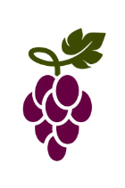

Szőlő szüretelős játék
A játék lényege hogy olyan irányba haladjunk hogy a minél több szőlőt tudjunk le szüretelni.
Speciális lépések:
Teleportálás: Ilyenkor Bármely mezőre tudunk lépni és a játékot arról a mezőről folytatjuk.
Látótávolság növelés: Ilyenkor nem csak egy hanem kettő mező távolságra is tudunk lépni.
Függ/vízsz: Ekkor a játékos az adott oszlopban és sorban bárhová képes lépni, és onnan folytatja ahová lépett.
Lapok értéke:
| Képek: |
|
 |
 |
 |
 |
 |
| Értékük: |
16 |
8 |
9 |
13 |
10 |
10 |